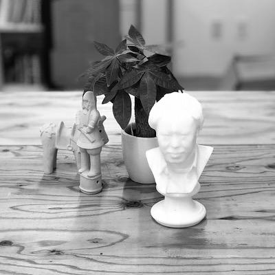
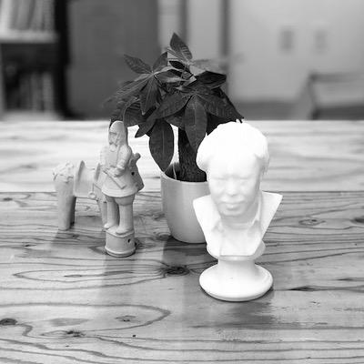

自己紹介
広告私は濱口琴音です．
私は38歳です．
私は，36歳の妻と，6歳の三毛猫と，3歳の息子と同居しています．
息子は「ギャーギャー」ととてもうるさいため，猫はいつも寝室に避難しています．
妻と猫は相思相愛なので，妻の後ろを金魚のフンのように付いて回りますが，私に懐いていません．

私は濱口琴音です．
私は38歳です．
私は，36歳の妻と，6歳の三毛猫と，3歳の息子と同居しています．
息子は「ギャーギャー」ととてもうるさいため，猫はいつも寝室に避難しています．
妻と猫は相思相愛なので，妻の後ろを金魚のフンのように付いて回りますが，私に懐いていません．
